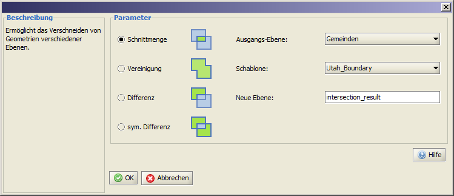

Verschneidung
Diese Funktion bietet die Möglichkeit sowohl einzelne Objekte mit einer Ebene, als auch komplette Ebenen miteinander zu Verschneiden.
Sollen einzelne Objekte einer Ebene als Schablone dienen, müssen diese vor dem Starten der Funktion selektiert werden (gelb hinterlegt).
Werden komplette Ebenen miteinander verschnitten, ist dies vorherige Selektieren der Ebene nicht notwendig.
Die Funktion kann innerhalb der Menüleiste über Werkzeuge > Verschneidung aufgerufen werden.
Die Ausgangsebene ist diejenige Ebene, welche die Objekte enthält, welche zugeschnitten werden sollen. Die zweite Ebene dient als Schablone.
Die jeweils für den Verschneidungsprozeß zur Verfügung stehenden Ebenen können via DropDown Liste ausgewählt werden.
In der Abbildung blau dargestellt sind die ursprünglichen Flächen, hellgrün zeigt das Ergebnis der Verschneidung.
Das jeweils linke Flächenobjekt stellt die Ausgangsebene dar, das Rechte die Schablone.

Das Ergebnis der Verschneidung wird in einer neuen Ebene gespeichert und der Ebenenansicht hinzugefügt.
Je nach Datenmenge kann der Berechnungsprozess bis zu einigen Minuten dauern.
|